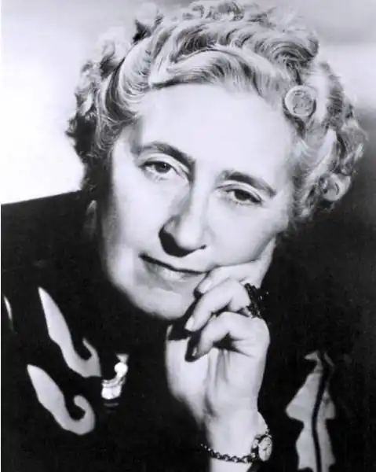
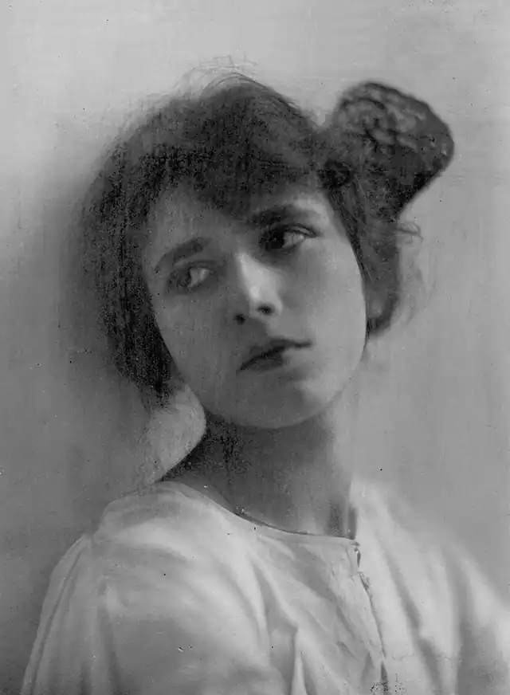

КРІСТІ, Аґата (Christie, Agatha — 15.09.1891, Торкі — 12.01.1976, Воллінгфорд) — англійська письменниця.Її перу належить 68 романів, 17 п'єс і багато оповідань, які видавалися величезними тиражами в усіх країнах світу. Понад мільярд книг Крісті видано англійською мовою і приблизно така ж кількість перекладів її творів іншими мовами. Чимало романів Крісті екранізовано, за ними ставлять спектаклі, незмінний успіх мають її п'єси. Знаменита "Мишоловка" щоденно йде на сцені одного із лондонських театрів упродовж кількох десятиліть. У 1958 p. Крісті обрали президентом англійського Детективного клубу і вона залишалася на цьому посту до кінця своїх днів. За літературні заслуги їй було подаровано дворянський титул. Створені Крісті персонажі — детектив-професіонал Еркюль Пуаро та наділена дивовижною інтуїцією та спостережливістю Джейн Марпл із села Сент-Мері-Мід — завоювали якнайширшу популярність, посівши місце в одній шерезі з такими героями, як Шерлок Холмс англійця А. Конан Дойла та Метре француза Ж. Сіменона.
Формування поглядів та світосприйняття Крісті відбувалося на межі XIX і XX ст., і, за її власним зізнанням, їй завжди було властиве відчуття своєї належності до двох епох — вікторіанської, яка відходила в минуле, та сучасної, що наставала. Вона народилася у щасливій та дружній сім'ї Фредеріка та Клари Міллер у приморському містечку Торкі. її ранні роки проминули в атмосфері затишку батьківського дому в маєтку Ешфілд, де життя збігало мирно і спокійно відповідно до усталеного ритуалу, де її оточувало умеблювання, витримане в пізньовікторіанському стилі. У "Автобіографії" ("An Auto-biography", видана посмертно у 1977 p.) Крісті писала: "В мене було щасливе дитинство. У мене був дім і сад, які я любила, розумна і терпляча няня, батько та мати, котрі любили одне одного й були справді щасливі у шлюбі". Спомини про ці роки збереглися назавжди. У пам'яті залишилися танцювальні вечори, влаштовувані в Ешфілді, й бали у Лондоні, незабутня атмосфера Різдва. Чимало часу відводилося на читання. Мати читала дітям класиків (Ч. Діккенса, В. Теккерея, В. Скотта, французькою — А. Дюма), Агата захоплювалась у дитинстві чарівними казками, романами Ж. Верна, оповіданнями А. Конан Дойла, а згодом до кола її зацікавлень увійшли Д.Ґ. Лоуренс, М.Сінклер, де Квінсі. У неї були неабиякі математичні здібності, сила логічного мислення; вона була обдарована музикально, чудово грала та співала. Любила театр, особливо оперу. Буваючи у Парижі, відвідувала "Ґранд опера" та "Комічну оперу". Вона й сама мріяла стати оперною співачкою, пройшла прослуховування у нью-йоркській "Метрополітен опера", але недостатня сила голосу (сопрано) не дозволила їй розпочати театральну кар'єру. Крісті не шкодувала про це. Їй завжди було притаманне вміння тверезо оцінити ситуацію, і вона вважала, що свої сили слід віддавати лише тому, в чому можеш досягти цілковитого успіху. Їй були властиві оптимізм, вміння радіти життю, інтерес до людей, розмаїття їхніх характерів. "Я щаслива сказати, що можу радіти майже всьому", — пише вона в "Автобіографії".
Зі смертю батька матеріальний добробут родини Міллерів похитнувся, дім в Ешфілді довелося здати на винайм. На зимовий сезон Крісті разом з матір'ю поїхала у Каїр. Освіта Крісті не була систематичною; навіть на обов'язковому відвідуванні школи батьки не наполягали, віддаючи перевагу домашнім заняттям. Уже тоді, коли їй було за двадцять, Крісті закінчила курси медсестер і під час Першої світової війни працювала у шпиталі. Під час війни вона вийшла заміж за льотчика Арчібальда Крісті, молодшого офіцера королівської авіації. Весілля було скромним, відбулося у Кліфтоні, де був розташований шпиталь Червоного Хреста, в якому працювала Крісті. Під її доглядом перебували двадцять з лишком поранених, що лежали в хірургічному відділенні. Вона турботливо виходжувала їх і навчалася при цьому на курсах із фармакології та хімії, що згодом вельми знадобилося їй у письменницькій діяльності. Інформація про ліки, отрути, необхідну медичну допомогу, про симптоми хвороб — усе це вона використала в романах з великим знанням справи. Прийшла звістка про поранення чоловіка; невдовзі він повернувся в Англію й отримав посаду в Міністерстві авіації в Лондоні. Життя налагоджувалося. На світ з'явилася донька Розалінда. Був куплений будинок у передмісті Лондона, вийшов друком перший роман "Таємнича історія у Стайлзі" ("The Misterious Affair at Styles", 1920). Дуже важливою подією у житті Крісті стала навколосвітня подорож; вона вирушила у неї разом із чоловіком, якого запросили в якості фінансового радника супроводити Британську місію. Враження від перебування у Південній Африці, Австралії, Новій Зеландії, на Гавайських островах, а потім у Канаді були сильними та незабутньо яскравими. Повернення до буденної дійсності обернулося для Крісті цілою низкою тяжких нещасть: за смертю матері відбулося розлучення з чоловіком, обраницею котрого стала інша жінка. Довелося зазнати самотності, болю зради, холодної безжальності Арчібальда. Однак сила волі, енергія та життєлюбність допомогли подолати втрати і розчарування. Рятівними виявилися нові враження від подорожей. Спочатку разом з дочкою Крісті вирушила на Канарські острови, а потім у східному експресі відвідала Стамбул, Дамаск, перетнула пустелю і прибула у Багдад. Від того часу і на все життя подорожі стали її пристрастю. Де тільки вона не побувала! У Єгипті, Північній Африці, в Іраку та Саудівській Аравії, в Італії та Югославії, у Греції, Персії, Росії. Під час однієї з поїздок на Схід вона зазнайомилася з археологом Максом Меллоуеном, котрий став її другим чоловіком. Під час Другої світової війни Крісті працювала фармацевтом у лондонському шпиталі. У Франції був убитий чоловік її доньки Розалінди; сиротою зостався єдиний онук Крісті — Метью, що з'явився на світ восени 1943 р. "Війна нічого не вирішує, — пише Крісті в "Автобіографії", — і виграти війну так само згубно, як і програти її... Ми повинні навчитися уникати воєн, тому що війна безглузда, вона руйнує як нас самих, так і наших суперників". Цей тверезий висновок народжений гірким досвідом. Успіх, який постійно супроводив письменницю, матеріальний добробут, що став плодом її багаторічної літературної діяльності, зовсім не вплинули негативним чином на суть її особистості. Скромність, такт, відданість своїй улюбленій справі, пов'язаній зі створенням дивовижних за своєю притягальною силою та цікавістю творів, неприйняття пози, нелюбов до слів, мовлених на публіку, завжди були притаманні Крісті. Ця титулована "дама-кавалер", удостоєна ордена Британської Імперії, провадила вельми замкнуте життя, ніколи й ніде не виголошувала промов, віддаючи перед усім іншим перевагу перебуванню у колі персонажів, створених силою її творчої уяви, у світі, який їх оточує, і який, за словами одного з критиків, ми можемо назвати "справжньою Англією". Життя, позбавлене сенсацій, буденне існування були більш за все до душі "найбільш друкованій письменниці світу", якою оголосило Крісті на початку 70-х років ЮНЕСКО. Серед усього написаного Крісті особливо популярними є твори: "Убивство Роджера Екройда" ("The Murder of Roger Ackroyd", 1926), "Убивство за абеткою" ("The ABC Murder", 1936), "Десять негренят" ("Ten Little Niggers", 1939), "Труп у бібліотеці" ("The Body in the Library", 1942), "Кривий будиночок" ("Crooked House", 1949), п'єси "Свідок звинувачення"("Witness for the Prosecution", 1954), "Зернятко в кишені" ("A Pocket Full of Rye", 1954), "Блідий кінь" ("The Pale Horse", 1961), "І в тріщинах дзеркальний круг" ("The Mirror Crack'd", 1963), "Третя дівчина" ("Third Girl", 1966, укр. пер. "Третя квартирантка"). Перерахувати все неможливо. Виходили збірки оповідань Крісті, друкувалися вірші (під псевдонімом Мері Вестмакотт), кілька повістей романтичного характеру, цікаві історії. Особлива доля у п'єси "Мишоловка" ("The Mousetrap", 1954), створеної на основі однойменного оповідання. Вона перекладена 24 мовами, зіграна в багатьох театрах. Лише в Лондоні, де вона йде щодня вже майже сорок років, ця п'єса забезпечила касові збори, які перевищують 16 мільйонів фунтів стерлінгів. Детективи Крісті посутньо відрізняються від стереотипів "поліцейського роману". У її книгах відсутні описи жахів, насильства, катувань, у них немає смакування жорстокості та садизму. Критики називають її твори "інтуїтивними" детективами, у яких розкриття злочину відбувається завдяки притаманній героям психологічній проникливості. Головний акцент робиться не на дослідженні доказів, а на змісті та структурі діалогу, на спостереженнях за поведінкою персонажів, на виявленні аналогій, котрі дозволяють зробити певні висновки. Все вивірено, деталі значущі, реалії побуту достеменні та виразні, і все освітлено тонким гумором, різноманітні можливості якого Крісті майстерно використовує. Розмірковуючи про особливості детективної белетристики, Крісті визначила ті її риси, досягнути яких вона прагнула сама. Важливого значення вона надавала обсягові твору, вважаючи, що детективна оповідь у жодному разі не повинна перевищувати 230 сторінок; стосовно ж такої форми, як "трилер", де все ґрунтується на швидкій зміні подій та захоплюючій дії, то його обсяг ефективний тоді, коли він не більший за 110 сторінок. "Сутність хорошого детективу полягає в тому, — зауважувала Крісті, — що дія в ньому реальна, але рано чи пізно читач все ж здогадується, що вона нереальна". Обов'язковою умовою детективу є вбивство та розслідування скоєного злочину, яке призводить до виявлення злочинця. Крісті вважає, що "злочинець не мусить бути незвичайним, а мотив злочину екстраординарним". На її думку, в сучасних детективах "майже кожен може виявитися злочинцем, навіть сам слідчий". Образи детективів-слідчих у романах Крісті вельми різноманітні: це бельгієць Пуаро, котрий попоїздив по світі і чимало побачив на своєму віку, стара діва міс Марпл, наділена гострим, як бритва, розумом і разючою спостережливістю, що дозволяє їй, не виходячи за межі "свого села", розплутувати причини та наслідки загадкових випадків, це містер Квін і Паркер Пайн, кожен з яких веде розслідування за своїм методом — один, наслідуючи в усьому приклад Шерлока Холмса, а другий — розмірковуючи про злочин у своєму улюбленому кріслі й, зрештою, це детективи-аматори Бересфорди.